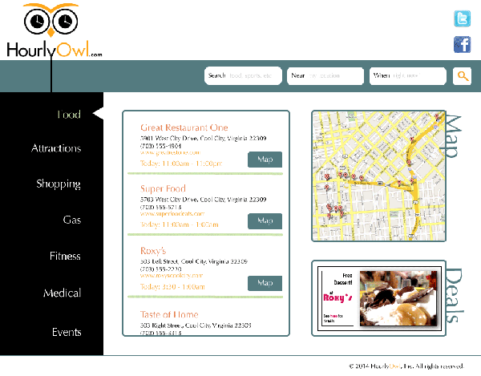

Hourly Owl Wire Frame
2014, digital
Specifications: Create a wire frame for a website that shows users what business are open at a specific hour in a specific location, including current location. Use logo provided.
The Scientific Revolution and Philosophy
Specification
One Crafty Historian BlogSpot
Specification